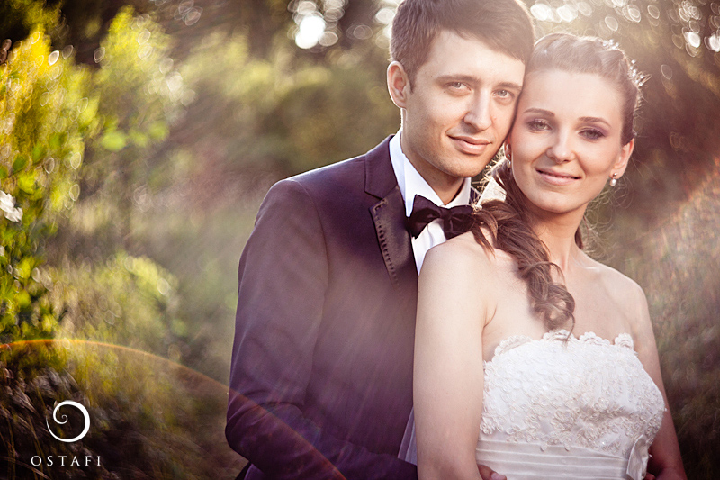
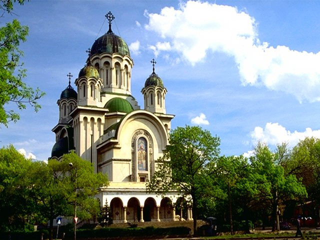
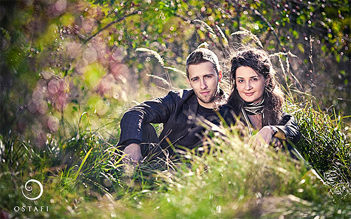
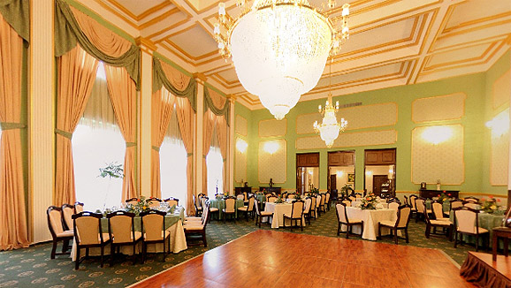

Si uite asa am dat viata propriului nostru film
Cuvintele sunt inlocuite de poveste!
Speram sa va placa 
AV
raga prietene, bine ai venit! Iti multumim ca ai facut primul pas in a fi alaturi de noi in cea mai importanta zi a vietii noastre. Suntem foarte emotionati si entuziasmati pentru nunta noastra si ne dorim sa fim alaturi de toti oamenii la care tinem si care si-au pus amprenta pe viata noastra. Fie ca ne cunoastem de o viata sau numai de cateva luni, fie ca am ras sau am plans impreuna, fie ca ne vedem des sau mai rar decat am vrea, tu esti unul dintre acei oameni speciali. Ne dorim ca nunta noastra sa fie momentul in care vom fi alaturi si ne vom imbata impreuna. :) Si ca sa nu o mai lungim, te tinem la curent cu pregatirile pentru nunta si te rugam sa ne ajuti cu pareri si sugestii despre cum putem sa facem ca nunta noastra sa fie o petrecere de zile mari.
Cuvintele sunt inlocuite de poveste!
Speram sa va placa 

Inca nu ne vine sa credem ca deja a trecut prima luna. Am amanat cat mai mult acest post, pentru ca am vrut sa pastram in suflet cat mai mult fericirea zilei noastre! Acum stim ca acest sentiment minunat din sufletul nostru nu va disparea niciodata, indiferent cate luni sau ani vor trece.
A fost o luna minunata! Simtim ca am inceput o viata noua, o viata pe care ne-am dorit-o atat de mult! ceva s-a schimbat, desi nu putem defini. Poate e atitudinea pe care o avem fata de viata, poate e incredere sau siguranta; indiferent ce ar fi, e minunat si asa vrem sa ramana! Am descoperit prieteni noi, avem multe amintiri placute si emotionante.
Cat am planuit nunta, ne-am gandit sa organizam Cea mai
tare petrecere, si cu ajutorul vostru chiar am resusit!
Ne-au “dat afara” la 8 dimineata, vorba aia
 !
!
Si acum multumirile oficiale, mai ceva ca la Oscar
 ca doar vorba aia… noi am castigat ceva mai presus de
orice Oscar!
ca doar vorba aia… noi am castigat ceva mai presus de
orice Oscar!
Pai in primul rand multumim voua ca ne-ati urmarit blog-ul si ne-ati ridicat mereu moralul prin like-uri si comment-uri pozitive!
Multumim parintilor, familiei, prietenilor si colegilor
care timp de 1 an, 8 luni si 3 zile  cat a durat logodna noastra si, implicit, pregatirile de
nunta, ne-au suportat, la propriu, emotiile, gandurile
exprimate de cele mai multe ori cu voce tare si scenariile
care uneori depaseau limitele normalului
cat a durat logodna noastra si, implicit, pregatirile de
nunta, ne-au suportat, la propriu, emotiile, gandurile
exprimate de cele mai multe ori cu voce tare si scenariile
care uneori depaseau limitele normalului  si care ne-au incurajat si ne-au spus de un milion de ori,
si asta la propriu, ca totul va fi bine! Si a fost!! Acum
puteti spune cu totii TOLD YOU!!!
si care ne-au incurajat si ne-au spus de un milion de ori,
si asta la propriu, ca totul va fi bine! Si a fost!! Acum
puteti spune cu totii TOLD YOU!!! 
Multumim celor mai tari nasi, “primii care au crezut in noi”! Pornim increzatori in viata noastra avandu-va pe voi ca exemplu de iubire, intelegere si intelepciune!
Multumim celor mai tari domnisoare si cavaleri de
onoare!!! Ana, Ancuta, Corina, Irina, Julia, Vali, Alex,
Mihai, Radu, Razvan, Sorin si Vali!!! YOU GUYS ROCK!!! Ati
fost minunati, poate va reprofilati  !
!
Multumim profesionistilor pe care am avut norocul sa ii intalnim si a caror maiestrie a facut ca ziua de 27 August sa fie mult peste asteptarile noastre! Multumim Ostafi pentru magia ta, multimim Toni si Vaida Show pentru un spectacol de arta si incantare muzicala, multimim Laura si Bella pentru ca ati transformat Cenusareasa in Consanzeana, multumim Dragos pentru sfaturi si rabdare si, bineinteles, multumim staff-ului Carery Luxury Ballroom si, in special, dnei Cristiana pentru un o locatie si prezentare ca in povesti!!! Va multumim tuturor ca ne-ati tratat ca pe niste prieteni si ca ne-ati oferit ocazia sa va avem prezenti alaturi de noi!
Multimim tuturor invitatilor care au facut totul pentru a fi alaturi de noi! Impreuna am reusit sa ne relaxam, sa ne super distram, sa ne bucuram si sa fim noi insine!!!
Nunta noastra este un vis implinit si asta in mare parte datorita voua!!!
Multumim 
Anca si Vlad
UAU!!! Au mai ramas doar 7
zile!!! 7 zile pana la ziua la care am visam timp de 1 an
jumate! Emotii, emotii, emotii dar numai pozitive!
Nerabdatori sa ne trezim in dimineata aceea sa ne bem
cafeaua – bine Vlad ceaiul  – si sa constientizam ca asta e!!! Am ajuns la
punctul final sau mai bine zis la start! Vom trai din plin
toata fericirea si bucuria alaturi de voi si cu siguranta
vom pastra mult timp zambetul pe fetele noastre!
– si sa constientizam ca asta e!!! Am ajuns la
punctul final sau mai bine zis la start! Vom trai din plin
toata fericirea si bucuria alaturi de voi si cu siguranta
vom pastra mult timp zambetul pe fetele noastre!
SUNTETI PREGATITI PENTRU CEA MAI TARE PETRECERE???
Noi suntem 
Desi a durat un pic mai mult decat voiam noi, a trebui
sa lasam geniul creator sa faca treaba buna pana la capat,
ca doar vorba aceea graba strica treaba. Din
fericire, nu ne-am grabit si a iesit ceva frumos,
reprezentativ pentru noi si pentru nunta noastra, si speram
sa va placa si voua in egala masura  .
.
De la cei multi care au primit-o am primit zambete,
incurajari, reactii precum bai voi chiar sunteti niste
nebuni… simpatici si multe felicitari lui Vlad,
designerul si artistul familiei  . Pentru cei putini la care, cu parere de rau, nu am ajuns
inca postam invitatia noastra pe site pana una alta.
. Pentru cei putini la care, cu parere de rau, nu am ajuns
inca postam invitatia noastra pe site pana una alta.

Enjoy it si va asteptam cu drag la petrecere!
P.S. Speram sa se vada bine toate detaliile grafice

Adica avem si biserica! Si nu orice biserica, ci una dintre cele mai deosebite: BISERICA CASIN.
A fost nevoie sa participam numai o la nunta acolo ca sa stim ca senzatia aceea speciala si spiritualitatea care chiar se simteau sunt unice si ni le dorim si pentru noi. Mai mult, corul a reusit sa ne sensibilizeze foarte mult (la unii pana la lacrimi – aka Anca) si sa nu il mai uitam.
Asadar, va asteptam cu drag sa ne vedeti cand ne pun pirostriile pe cap la propriu pe 27 august de la ora 19:30.

Fotograful este unul din putinele lucruri pe care pot eu
(Vlad) sa le aleg. Asa ca Anca a inceput sa caute
fotografii la vreo doua luni de cand am cerut-o, si
periodic mi-a trimis e-mailuri cu diferiti artisti, pana
cand am ales fotograful care ii place ne place,
de departe, cel mai mult. Evident, nu? 
Lasand gluma la o parte, Ostafi este un adevarat artist. Natura prinde viata in fotografiile lui, dragostea transpare (doar Anca stie ce e asta) si astfel iti ofera amintiri nepretuite pentru o viata intreaga.
Ca sa va conginveti singuri vizitati www.ostafi.ro, si dupa veti intelege de ce am zis sa lasati aparatele acasa.

… in viata noastra impreuna in data de 10 Ianuarie 2011. Aceasta a fost ziua in care, plini de emotii, tinandu-ne de mana asa cum am facut-o timp de fix 7 ani, am zis DA in fata ofiterului starii civile!
Am zis da unei vieti pline de iubire in orasul pe care il indragim din toata inima: Viena.
Inca mai simtim acele emotii de fiecare data cand vorbim despre asta sau cand ne uitam la fotografii. De aceea, vrem sa impartasim si cu voi acele clipe de vis pe care noi le-am trait si care vor ramane in sufletele noastre pentru tot restul vietii.
Undeva prin iunie am descoperit cel mai tare restaurant. L-am vizitat si am fost incantati. Cei drept ne-a luat ceva pana sa semnam, insa din noiembrie stim sigur unde vom petrece: Caredy Luxury Ballroom, salon Green .
Prima poza este un teaser, puteti vedea turul virtual pe http://turvirtual.net/etv/129/.

Este asa cum ne-am dori: elegant, cu personalitate,
deosebit de frumos, ingrijit si cu toate facilitatile de
genul central, locuri de parcare, terasa cu pomi, servire
impecabila si altele care nu ne vin acum in minte  .
.
Prima noastra supriza pentru voi este OPEN
BAR! Asa vom fi siguri ca petrecerea va tine pana
dimineata si nu vom sta pe uscat! 
{kind=link}
{kind=link}
{kind=link}
{kind=link}
{kind=link}
{kind=link}
{kind=link}
{kind=link}
{kind=link}
{kind=link}
{kind=link}
{kind=link}
{kind=link}
{kind=link}
{kind=link}
{kind=link}
{kind=link}
{kind=link}
{kind=link}
{kind=link}